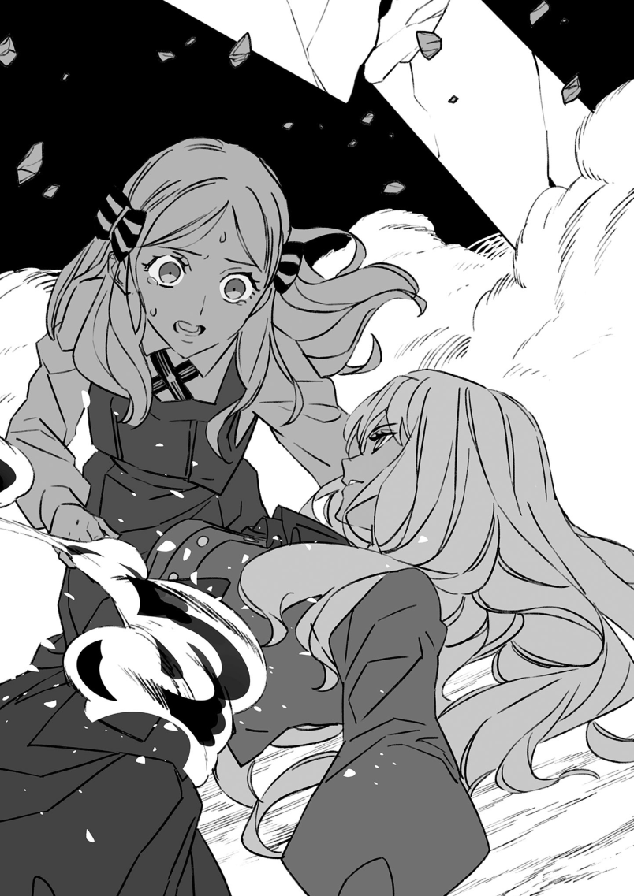

"Um Brinde à Imagem do Céu Azul Refletida numa Poça"
Telhado da delegacia
O coração de Sigma estava surpreendentemente calmo depois que ele disparou seu grande arco. Tudo terminaria se errasse o tiro, mas, por algum motivo, ele sabia que não erraria.
Não era uma questão de confiar na própria habilidade. Era porque sabia que aquele grande arco existia com um único propósito: derrubar uma deusa, Ishtar.
"Sinceramente... eu não esperava que fosse ser tão eficaz assim", murmurou Sigma com calma.
"Um arco mata-deuses, é? Pessoalmente, tenho sentimentos mistos sobre isso, mas vá lá. Não é nem de longe a primeira vez que alguém fabrica um desses apetrechos trapaceiros que invertem a causalidade para o golpe nunca errar", comentou a silhueta robusta do caçador sentado a seu lado.
Depois de ver o caçador falar com uma expressão séria em vez do costumeiro sorriso, Sigma recapitulou em silêncio os acontecimentos.
A história de como sua flecha fora criada poucos instantes antes.
Menos de uma hora antes, na delegacia
"Eu sei umas coisinhas sobre você, garoto. Anda fazendo umas jogadas bem arriscadas hoje, não é?"
Dumas aparecera diante de Sigma sem qualquer traço de cautela. Sigma acreditou na acusação. Dumas certamente sabia que o Servo de Sigma não tinha capacidades ofensivas e que ele não era inimigo da polícia.
"Ah, dá para sentir umas coisas doidas aí dentro, mas eu ainda mal consigo mexer nisso. Se você tivesse algo num nível em que não houvesse espaço nenhum para eu melhorar, não estaria precisando da minha ajuda para fazer sua flecha funcionar contra a deusa", disse o lendário escritor enquanto observava o grande arco que Sigma lhe entregara.
Era o grande arco que os pais de Kuruoka Tsubaki haviam trazido para usar como catalisador na invocação de um Espírito Heroico.
"Dito isso, admito que matar uma deusa a tiros já passa um tantinho da minha categoria. Vamos precisar do conselho de um especialista."
"Eu sei que estamos pedindo demais. Estou disposto a elevar seu nível de Energia Mágica com um Selo de Comando, se for necessário", disse o chefe de polícia.
"Ninguém esperava que você não fosse fazer isso. Você vai ter mesmo de usar um, mas estamos precisando de ajuda adicional além disso, entendeu? Estamos tentando elevar este Fantasma Nobre para além das minhas capacidades."
"Você sabe que eu não entendo o bastante de como lidar com artefatos."
"É, mas eu não estava falando de você, irmão. Já chamei um profissional para esse trabalho."
Ao dizer isso, Dumas tirou um celular do bolso. Um telefone azul chamativo, de um modelo que o chefe jamais tinha visto.
"Hm? O que é isso?"
"Uma arma secreta, irmão. Bem, eu mesmo consegui o meu faz pouco tempo."
Dumas, despreocupado, pôs o celular ao lado do grande arco e falou com ele.
"Então, deu para ouvir tudo, professor?"
Uma voz respondeu do aparelho.
--Alto e claro. A qualidade de áudio disso é comparável à do modelo mais recente da Peligor.--
"Espera, Caster. Como é que esse telefone está pegando sinal?"
As linhas comuns já tinham sido cortadas, o que significava que aquele telefone recebia sinal por meios mágicos. Ainda assim, o telefone azul escondia tão bem sua Energia Mágica que o chefe o via apenas como um celular azul comum.
"Ele é um modelo especial."
Em seguida, Caster fez uma pergunta ao telefone.
"E então, como está daí, professor? Alguma ideia interessante?"
--Não consigo imaginar que minhas ideias impressionem um dos mestres da literatura... mas este dificilmente é momento para hesitação.--
"Não me diga que essa voz é... a do Lord El-Melloi?!"
--Como eu já lhe disse antes, eu agradeceria se acrescentasse um II ao meu nome.--
O Lord da Torre do Relógio com quem Orlando havia falado alguns dias antes ao formar sua aliança com Flat.
Aquela conversa havia ligado seus destinos, permitindo esse reencontro?
O chefe tinha muitas perguntas para Caster, mas concluiu que interromper a conversa por causa disso seria inadequado, então falou diretamente com o telefone.
"Perdão, El-Melloi II. Eu também gostaria de solicitar sua ajuda."
E assim Dumas se pôs a trabalhar às pressas sob a orientação de El-Melloi II.
--A primeira pergunta que precisamos fazer é se o grande arco do casal Kuruoka é ou não a peça verdadeira pertencente a Qin Shi Huang. Isso é muito importante, mas... combinando a análise de Caster com as informações de Sigma, creio que é seguro presumir que sim.--
Dumas sentou-se sobre a mesa de seu escritório e pôs a pena a correr por diversas folhas enquanto ouvia a voz de El-Melloi II.
Um caldeirão antiquado estava ao lado da mesa, enchendo o ar com um aroma estranho. Caster colocou o grande arco no caldeirão manifestado por seu Fantasma Nobre e passou a despejar ali, regularmente, as páginas do manuscrito à medida que as escrevia. Era uma cena das mais surreais.
Sigma sabia que, normalmente, ele reconstituía as coisas com um toque, mas Dumas explicou que projetos maiores exigiam um procedimento mais elaborado.
--Partindo da hipótese de que o Espírito Divino em questão seja Ishtar da Suméria, ou possua uma faceta classificável como Ishtar, o domínio que ela governa é o céu. Além disso, esta cidade contém resquícios do mundo semelhante a um Campo de Realidade em que meu aluno caiu outro dia... isto é, elementos do submundo. Se isso ainda for verdade, é bastante provável que aspectos de Ereshkigal e do submundo sumério também se manifestem. No entanto, isso é apenas um desejo meu, não uma observação em que devamos basear este projeto.--
"Então qual é o plano de verdade, professor?"
Com uma expressão azeda, o professor de magia ofereceu sua resposta final ao autor best-seller que insistia em chamá-lo de "professor" pelo telefone.
--Correspondência.--
"Correspondência?"
--Esse grande arco foi disparado para matar Dajiaoyu, o deus do mar que impediu a viagem de Xu Fu quando Qin Shi Huang lhe ordenou que buscasse a imortalidade. Em outras palavras, um avatar do oceano. Muito provavelmente, essa "mulher de vermelho" de quem o Sr. Sigma falou é um vestígio desse deus do mar destinado a se manifestar se for levado ao submundo.--
Depois disso, El-Melloi II mudou para um tom mais brando ao entrar no tema do truque para matar uma deusa.
--O oceano é azul porque reflete a cor do céu. Reorganizando as coisas a partir daí, deve ser possível produzir um falso ato de deicídio.--
O chefe e Sigma reagiram com choque ao ver o Lord tratar essa premissa como algo "possível", enquanto Dumas apenas movimentava a pena pelo papel com alegria.
--Isso, claro, apenas se seu Espírito Heroico estiver dizendo a verdade sobre essa habilidade absurda de sobrescrever Fantasmas Nobres... mas eu não duvido. Isso é modesto comparado ao absurdo de uma emanação divina invocar o Touro dos Céus.--
"Se você diz."
Dumas falou aquilo só para introduzir uma pausa na conversa e continuar escrevendo, mas El-Melloi II o interrompeu.
--Espere. Sua sobrescrita não vai ajudar quando o folclore chinês e o sumério não têm nada em comum. Você vai precisar de um tradutor para encaixar essa peça redonda no buraco quadrado. Werner está aí com vocês, certo? Invente um ritual para reencarnar o grande arco empregando a magia de borboletas dele... Um bom ponto de partida para trabalhar com conteúdo sumério seria usar uma fórmula derivada da transformação dos símbolos e mitos de Sagitário; neste caso, Pabilsag e Quíron, além dos povos cavaleiros considerados a origem dos centauros... Ah, e o conto de Hou Yi derrubando os sóis também é muito aproveitável.--
Sigma se viu sobrepujado por aquela torrente de conhecimento e entendeu que jamais superaria um mago da Torre do Relógio em quantidade de informação.
El-Melloi II alternava erudição pura e reclamações pessoais, mas suas palavras não paravam, oferecendo à melhor pena de Paris a maior quantidade possível de pesquisa dentro do limite de tempo que tinham.
--Vênus foi amada ao longo de toda a história humana como a resplandecente Estrela da Manhã, a luz estelar mais próxima da humanidade. Outras representações da Estrela da Manhã são Lúcifer, considerado um demônio, e a própria deusa em questão, mais tarde também tomada como um demônio. E é justamente por isso que conseguimos erguer uma linha mínima de lógica se interpretarmos isto como o uso da majestade de Qin Shi Huang para dispersar maus espíritos. Ah, droga, foi ele quem forçou esse cruzamento entre mitos orientais e ocidentais. As coisas devem se encaixar direitinho se usarmos uma estrutura do período helenístico. Se você contar tudo isso a Werner ou a Svin, eles descobrirão o resto... Flat teria feito isso no puro chute... Ele não entende que é por causa dessa atitude que não consegue se formar...--
A palestra de El-Melloi II continuou por muitos outros assuntos, e Dumas seguiu escrevendo sua narrativa com base naquelas informações.
Sigma também ficou espantado com a rapidez com que Dumas reescrevia as histórias a partir do que aprendia, mas o que mais o inquietava era a voz hesitante de Lord El-Melloi II.
Ele já ouvira os rumores a seu respeito. Diziam que, se seus alunos talentosos eram comparáveis a um oceano, a capacidade de Energia Mágica dele não passava de uma poça.
Mas outros rumores diziam que ele era temido pelo título de Duque Saqueador. Sigma entendeu em primeira mão por quê. Porque, naquele momento, a poça refletia a imagem do céu azul e tentava formar a imagem memorável do céu no horizonte de um mar.
Aquele El-Melloi II falava como se contemplasse a situação inteira de cima, mas o homem não estava na América do Norte, muito menos em Snowfield.
Ainda assim, enfrentava o arcano como se estivesse cara a cara com ele... Ver um mago de verdade discutir o assassinato de uma deusa com tanta frieza era, de fato, alarmante.
"...Por que está fazendo tanto por nós? O que a Torre do Relógio tem a ganhar com isso?"
Ele não conseguiu evitar a pergunta. A resposta de El-Melloi II veio de imediato:
--Encobrimento do Mistério. Salvar o mundo de uma ameaça. Magos não são heróis, mas acredito que estas são circunstâncias em que qualquer pessoa teria agido... embora eu admita que, no meu caso, não se trate de sacrifício nobre algum.--
"Então por quê?"
--Se houvesse apenas alunos formados nesta cidade, eu teria de dizer que fizeram sua escolha ao caminhar para a morte. Não tenho o direito de detê-los e, portanto, razão nenhuma para ajudá-los. Afinal, só lhes entreguei seus diplomas porque julguei que eram capazes de assumir a responsabilidade pelas próprias escolhas.--
Sigma percebeu pela voz que ele estava sofrendo com uma dor de cabeça ou com uma úlcera, mas, ainda assim, El-Melloi II respondeu com total sinceridade.
--Mas este caso envolve muitos alunos que ainda estão tendo aula... alunos cujas escolhas eu ainda tenho a responsabilidade de orientar. Nenhum professor que se preze fecharia os olhos para isso.--
"...Só isso?"
A situação tinha o potencial de prejudicar sua posição dentro da Torre do Relógio.
A resposta de El-Melloi II veio num tom de franca exaustão.
E, ainda assim, sem o menor traço de lassidão ou hesitação.
--Não há nada mais importante do que isso. Não importa o quanto sejam alunos problemáticos, fui eu quem escolheu, por vontade própria, aceitá-los na minha classe.--
A resposta final de El-Melloi II veio praticamente ao mesmo tempo em que Dumas terminava de sobrescrever o grande arco, com ajuda do uso remoto de Papilio Magia por Werner Ceasarmund na outra linha telefônica.
"Existe um nome para investigadores que resolvem casos apenas com as informações disponíveis, sem nem pisar na cena do crime. Chamam-se detetives de poltrona."
Dumas apanhou o grande arco de causalidade invertida, agora elevado a Fantasma Nobre com o conceito de derrubar a Senhora dos Céus, e ofereceu seu elogio sincero à pessoa do outro lado da linha.
"Você é realmente impressionante, professor. Está matando uma deusa sem sequer chegar à cena do crime."
Andar superior do templo
"Ishtar! Minha deusa, não... não...!"
O Templo de Ishtar flutuante sacudiu violentamente e começou a descer devagar até o chão. Quando o corpo de Filia tombou sobre o andar superior, já havia perdido a maior parte de sua divindade, e ela perdera também o efeito do Encanto que controlava o templo e a terra.
Rider já tinha percebido o perigo e evacuado seus Mestres a essa altura, deixando apenas Haruri, em lágrimas, no andar superior do templo, carregando o corpo desfalecido de Filia nos braços.

"Isso não pode estar acontecendo. Ishtar! Ah, agh, se ao menos... se ao menos eu fosse mais..."
"Não seja tão pretensiosa..."
Com um sorriso valente, o resto da deusa Ishtar no corpo de Filia enxugou as lágrimas do rosto de sua fiel com os dedos da mão direita.
"Você é apenas humana. Não importa o que tente fazer, não pode mudar se uma deusa vive ou morre."
"Ishtar, minha deusa..."
"Que menina tola... Sempre com medo, me seguindo contra a própria vontade..."
Ela estivera ao lado da maga por apenas alguns dias, e elevá-la à posição de suma sacerdotisa tinha sido um capricho.
A garota não se destacava nem como pessoa nem como maga, mas era justamente isso que permitira a Ishtar interagir de maneira mais genuína com um ser humano vivo do presente.
"Escute o decreto final da deusa", disse Ishtar, acariciando a bochecha de Haruri. "Cuide bem... de Huwawa."
Ela pronunciou o Verdadeiro Nome de Berserker com uma voz cheia de misericórdia.
"Talvez não pareça... mas ela é uma garota muito solitária."
Antes que terminasse a frase, Ishtar usou o resto de sua Energia Mágica para ativar Maanna. E assim a Barca dos Céus empurrou o corpo de Haruri para dentro de si e, gastando o que lhe restava, voou levando apenas a garota para longe do templo.
"Ishtar...! Não faça isso comigo, eu não... eu ainda não fiz nada por você..."
"Vamos, menina, você sabe que não tem riqueza suficiente para me retribuir de forma que faça diferença."
As palavras eram uma tentativa de cortá-la emocionalmente, mas a deusa mantinha um sorriso tranquilizador e uma mensagem final que talvez fosse ou talvez não fosse uma piada enquanto observava sua arca partir com a sacerdotisa.
"Viva bastante e fique rica... E, quando isso acontecer, ofereça muito lápis-lazúli ao meu templo, entendeu?"
O silêncio se seguiu.
Os trovões distantes e o vento a oeste ainda podiam ser ouvidos, mas, à medida que ela perdia os cinco sentidos, tudo parecia acontecer em outro mundo.
Poderia ser sinal de que a maior parte dela já estava aprisionada no submundo.
"Isso não combina com você..."
O silêncio foi quebrado por sua arqui-inimiga de cabelos verdes.
"Não me lembro de você ter se importado assim com um humano antes."
Centenas de insultos lhe atravessaram a mente, mas, em vez disso...
"Foi a garota que eu mesma escolhi como minha suma sacerdotisa, sabe?"
... a deusa escolheu um contra-argumento sereno.
"Eu sou uma guardiã da humanidade. Não me importaria de arruiná-la por capricho... mas deixar minha garota morrer por causa dos meus próprios erros é inadmissível."
"..."
Ao ouvir os vestígios da deusa se apagando, Enkidu desviou os olhos e comentou:
"Você continua tão arrogante e irracional quanto sempre."
"Não posso negar... Negar isso seria jogar fora toda a minha identidade."
A alma de Ishtar imaginou Huwawa ainda lutando diante do templo e a sacerdotisa que a venerava nesta era distante.
"Seria um insulto aos pequenos que adoram o céu em Uruk... Não, esqueça."
Depois de vislumbrar Haruri voando para longe, a deusa declarou com um sorriso insolente. A arrogância do sorriso era o ingrediente secreto de sua beleza suprema.
"Seria um insulto aos pequenos que adoram o céu em qualquer era e, acima de tudo, um insulto a mim mesma."
"..."
"Quem enfim me derrubou... foi um humano", disse Ishtar, recordando o jovem mercenário que lhe desferira o golpe fatal. "Não foi você e não foi Ereshkigal. Fui abatida por mãos humanas que rejeitaram a minha nova era divina."
"Por que você parece tão feliz ao dizer isso?"
"Não se trata só de mim... A humanidade já não precisa de você nem de Gilgamesh... Eles provaram que chegaram à era em que podem caminhar com as próprias pernas... É frustrante, claro... mas é muito mais gratificante."
O sorriso nunca deixou o rosto da deusa enquanto ela se desvanecia no submundo.
"Não que... uma peça de sucata como você... fosse entender..."
Ela exibia o sorriso mais esplêndido, nobre e belo de todos. Um sorriso capaz até de abalar o coração do mercenário.
O templo enfim tocou o chão, e as rochas que o mantinham elevado se desfizeram. Sem restar vestígio algum da forma anterior do templo, aquela paisagem tornava-se símbolo de uma terra que perdera uma deusa.
Telhado da delegacia
Lembrando-se de sua conversa com El-Melloi II, Sigma pôs-se de pé no telhado da delegacia e olhou para o céu do oeste.
"Nenhuma das palavras de El-Melloi II soou mentirosa. Os Lords da Torre do Relógio realmente são tão incríveis quanto dizem os rumores."
"Hm... não acho que isso tenha a ver com ser um Lord. Se você estivesse falando de professores, aí sim eu concordaria. Ele não é um educador tão rígido quanto Quíron, mas achei os dois parecidos."
Depois de dizer algo ligado ao próprio passado, o garoto com o caduceu também voltou os olhos para o céu do oeste.
"Bem, parece que a deusa caiu e começou sua jornada pelo submundo... Agora é que a verdadeira provação começa."
Sigma seguiu a linha do olhar do garoto e fitou o oeste.
"Quem realmente lhe infligiu a morte foi Assassin... Quer dizer, Hassan-i Sabbah, não a garota. Mas você também teve um papel enorme ao atingir a deusa, finalmente entrando em cena no centro do palco desta Guerra do Santo Graal. Entende o peso disso?"
Francesca e Faldeus certamente já observaram o que aconteceu. Eu não posso mais dar desculpas.
Além disso, as silhuetas já o haviam informado de que o grupo de Bazdilot estava prestes a desencadear uma guerra devastadora sobre a cidade.
Ao imaginar como o chefe reagiria ao descobrir que havia um informante infiltrado na polícia, Sigma sentiu seus problemas só se acumularem.
Ele ergueu a cabeça, quieto, mas com firme determinação.
"É..."
Será que Assassin... ainda está bem? Ela deve continuar levando sua fé até o fim. Então eu também tenho de fazer o mesmo...
Observando os imensos espirais de relâmpago que ainda cobriam o céu do oeste, Sigma assobiou e comentou em tom de meia brincadeira:
"Ainda me esperam alguns dias sem dormir direito."